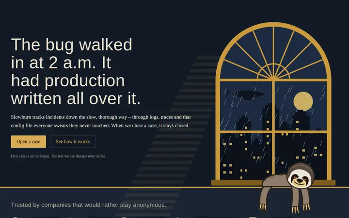
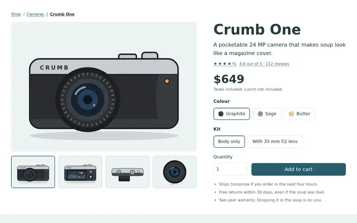
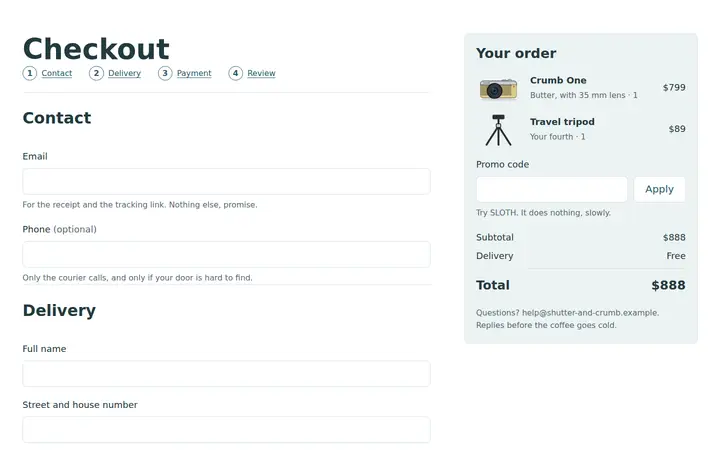
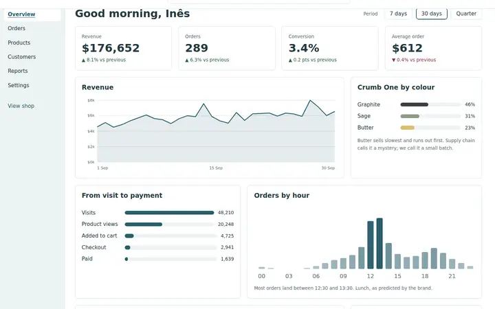
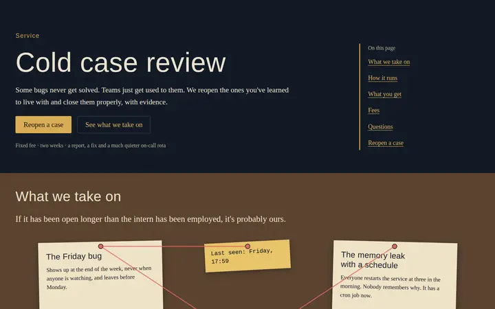
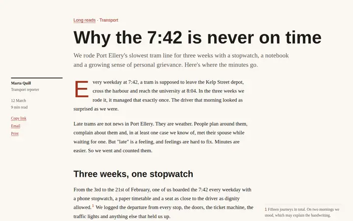
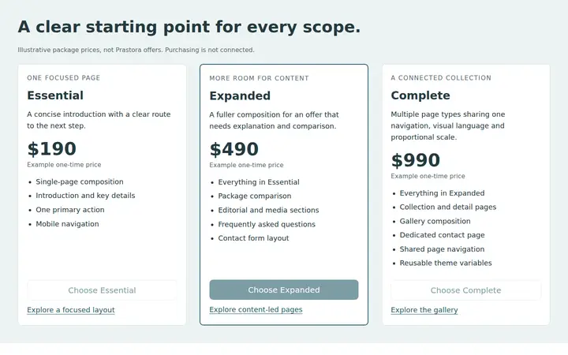
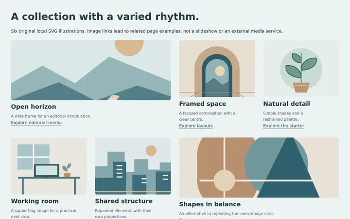
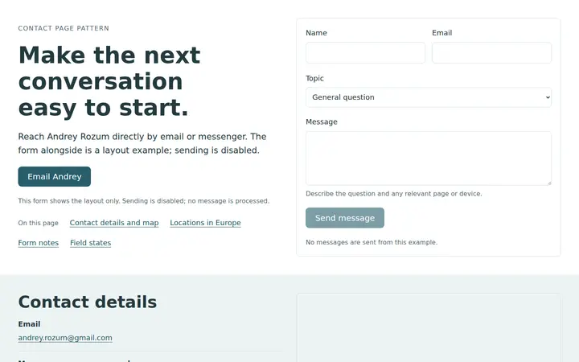

Slowburn landing
A noir landing page for a bug-hunting sloth. The artwork crosses section edges and lands in the same spot on every screen.
Complete pages built with Prastora. Each one leans on a different part of the framework, and a couple insist on dressing themselves.

A noir landing page for a bug-hunting sloth. The artwork crosses section edges and lands in the same spot on every screen.

A camera shop's product page: a gallery that recolours with the chosen finish, variants, specs and reviews. No JavaScript.

One-page checkout with live totals, payment options, gentle validation and a confirmation screen. Still no JavaScript.

The shop's back office: KPIs, charts, a funnel and an orders table on a denser scale, so a bigger screen shows more, not bigger.

Slowburn\'s cold case review: one service in depth, with scope, a dated process, a sample report, fixed fees, questions and an enquiry form.

A city magazine long read with sidenotes in the margin, a drop cap, a chart, a data table and a pull quote. Its own newsprint theme.

Plans side by side, a comparison table and the questions people ask right before they pay.

Images of every proportion, captions and a grid that keeps its calm when the pictures don't.

Slowburn\'s offices: contact routes on index cards, an office map with places you can select, and a street map that loads from Google only when asked.